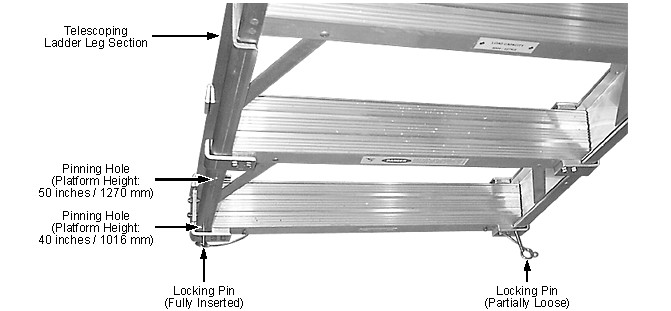

| NOTE: | Although platform height can be set while the ladder-platform is upright or on its side, setting platform height while the platform is face down is easiest. Do not reset the height of an upright platform while weight is on it. |
Illustration 3: Ladder Leg Telescoping Sections & Locking Pins
